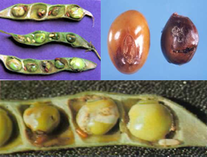
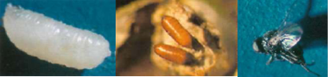

| Home |
| RED GRAM & CHICKPEA |
| 1. Gram pod borer |
| 2. blue butterfly |
| 3. grass blue butterfly |
| 4. plume moth |
| 5. Spotted pod borer |
| 6. spiny pod borer |
| 7. field bean pod borer |
| 8. pod fly |
| 9. stem fly |
| 10. eriophyid mite |
| 11. Blister beetle |
| 12. pod wasp |
| 13. flower webber |
| integrated Pest Management |
| questions |
| download notes |
PESTS OF PULSES - RED GRAM & CHICKPEA :: Major Pests :: Pod Fly
8. Pod fly: Melanagromyza obtusa (Agromyzidae: Diptera)
Distribution and status: India, South East Asia, Japan.
Host range: Redgram, Bhendi and Safflower.
Damege symptoms: Maggots cause damage by boring into the soft seeds and feed on grains. The damaged seeds are unfit for consumption as well as for germination. The extent of damage may be even upto 60-70% during severe infestation.
 |
Bionomics: Eggs are laid by them singly or in cluster inside the pod wall by piercing through the ovipositor. The fly lays about 60-80 eggs. Incubation period is 2-4 days. Larval period is about 5-18 days and pupal period varies from 7-10 days. A number of overlapping generations are found in a year.
 |
Management
- Conserve natural enemies like Euderus lividus, Eurytoma sp., Euderus agromyzae
- Spray Carbaryl 50 WP 1.5 kg or endosulfan 35 EC 1.25 L or lambda cyhalothrin 5 EC 400 -500 ml or Lufenuron 5.4 EC 2.5 L with 700 L water/ha